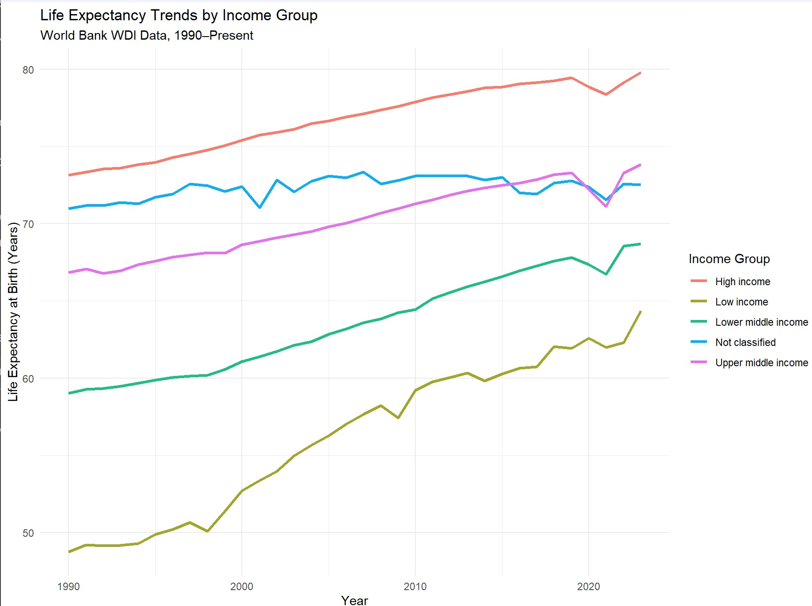

When people ask me what I’m studying, my go to line is to say “I’m studying to be like the little jaguar off of Zootopia, an actuary.” Oftentimes, people don’t actually know what an actuary does, and that movie scene is their only reference point. I then explain that actuarial work is much more about understanding data, risk, and long term financial outcomes than hunting around an office.
One of the biggest responsibilities that actuaries have is predicting how long people will live. Life insurance, pension plans, and even governments depend on these forecasts to make sure they have sufficient money to pay beneficiaries benefits far into the future. Because of this, actuaries study trends in life expectancy relatively closely, then creating models to help analyze the risk. For my project, I wanted to explore a question that reflects this core part of actuarial science: How have life expectancy trends changed across global income groups since 1990?
1990 may be a random year to start with, but with the given dataset from the World Bank’s World Development Indicators (WDI) API, it made sense. The year 1990 is the first year when all five global income groups have consistent life expectancy data, as well as for many countries this was the first year they started to report that information. The WDI collects data from official national sources such as statistical agencies, central banks, international organizations, and through its own country economists and surveys. They compile, clean, and standardize the data into categories which can then be viewed to find a variety of themes such as poverty, health, economy, and environment trends for countries all over the world. Their API provides a simple way for researchers to request the variables they need without having to download huge spreadsheets of data.

Graph depicting Life Expectancy Trends by Income Group over the last 30 years.To answer my question, I used the WDI API to pull annual life expectancy at birth values for each income group (High, Upper Middle, Lower Middle, Low, and Not Classified). The WDI API package in R allowed me to pull the information that I wanted from the data source specifically. Not knowing how the API worked, I did a quick google search to find the documentation to learn how I can retrieve the data I desire. Using the indicator “SP.DYN.LE00.IN”, I was able to find data for each year that included life expectancy and income group. After repeated attempts to work on the project, the API would suddenly be down at times, so I created a csv based on the data given by the API. After cleaning and the data by income group, I created a graph to show the trends of each group over the years.
The graph showed that life expectancy at birth has increased over time for all groups as we learn and discover more technology. The growth rates seem pretty similar amongst all the groups as they are all nearly parallel with each other, excluding the “Not Classified” group due to unknown variabilities. There is a dip around 2020 indicating that during covid, life expectancy rates at birth dipped, but quickly recovered thereafter.
Overall this project shows that while life expectancy has increased for all global income groups, meaningful differences between groups still persist. Even though the trends move in similar directions, the consistent gaps highlight why actuaries cannot rely on a single mortality assumption for all populations.